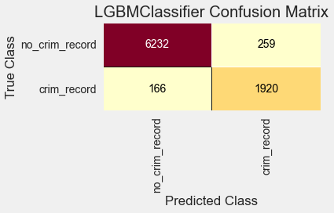
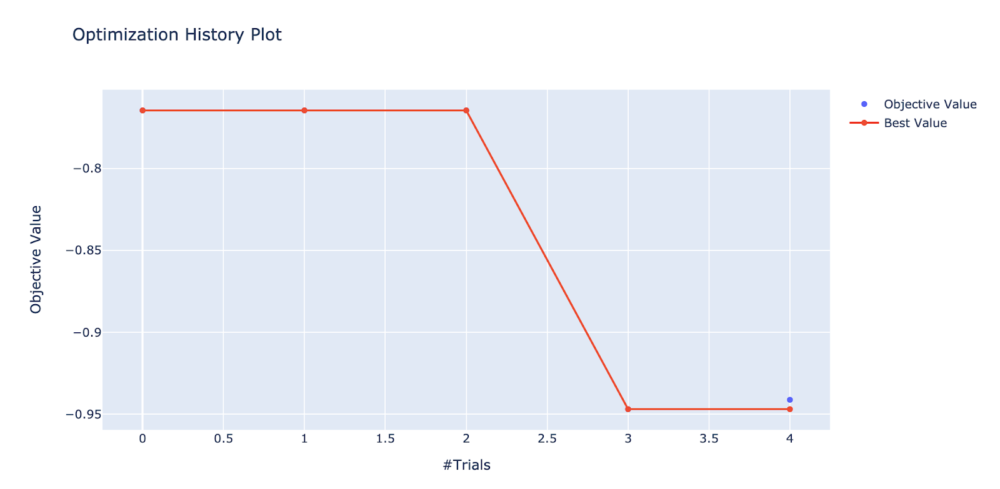

Update 2¶
Overview¶
This quarter our team worked with local Insurtech company Carpe Data. Carpe Data uses real-time data and predictive scoring for claims, underwriting and book assessment. Our team is building a model to predict if a website contains information about an arrest. Our data set consists of 5 GB of raw html code. Each row has a website’s html code, the url, and a label of 1 or 0. There are 34,307 rows of training data and 8,577 rows of testing data. The data set was web scraped and then labeled for the content. If the label was ‘Potentially unlawful activity’, a new label of 1 was assigned, otherwise a label of 0 was assigned. We aim to accurately classify new websites as either 1 or 0, while striving to avoid false negatives - since our model is for information retrieval. After classification, we aim to extract the date of the arrest and the arrest code.
Model Progress¶
Since our last update we have experimented with a variety of new models. We implemented gradient-boosted-trees using LightGBM and tuned our models hyperparameters using Optuna. Gradient-boosted trees are better for highly unbalanced data like ours where the minority class (positive labels–the ones containing criminal record information) hold greater value than the majority (negative) class and we care more about false negatives than false positives. After tuning we were able to achieve Recall of 96%. A major improvement over our original random forest model.

From the confusion matrix, we see that the bottom left value (the false negatives) is less than that from the Random Forest model (which had 301 false negatives).
In order to interpret the model, we plotted variable importance using lightGBM’s feature_importances method. We found the 25 most important features in our model.

As shown in the plot, the words ‘arrested’, ‘charged’, ‘police’ and ‘crime’ are the most important and are words we would associate with criminal records.
Decision Threshold Tuning¶

A probability threshold of ~0.65 would optimize both recall and precision, however we opted to use a threshold of 0.2 since recall is more important to us. A threshold of 0.2 maximizes recall without sacrificing too much precision and accuracy
Hyperparameter Tuning¶
Optuna is a python package that runs trials by case on a designated objective function. For hyperparameter tuning, the objective function consists of ranges of parameters tested and tests for best parameters values in that range. Optuna was found to be more efficient and faster than GridSearchCVParameter output is also more precise given its range, not from manually inputted values. For the above plot, over the number of trials, the search objective value becomes closer to 1 or -1, indicating strong model correlation to the dataset.

Model Assessment¶

As shown in the classification report after setting the threshold at 0.2, for websites where we identified arrest information (label of 1) , we got 96% recall, 85% precision and 95% accuracy.
In order to further assess our models, we used metrics such as the ROC curve, the Precision vs. Recall curve, and the Confusion matrix. Since we are dealing with criminal record information, we care more about minimizing our false negatives since they are more harmful if missed (so we care more about high recall than anything else).
Challenges¶
First, we encountered challenges during hyperparameter tuning. We started by using GridsearchCV, which was too slow for LightGBM’s many hyperparameters. We solved this by using Optuna, which is able to optimize the hyperparameter space. Instead of using GridSearchCV, which searches for all combinations of manually input hyperparameter values, Optuna looks for ranges of a specific hyperparameter and narrows it down more effectively and time efficiently. Using this package, we managed to efficiently obtain the best hyperparameters for our model. We can broaden this tuning to most other models as well.
Next Steps¶
Our next steps are to continue to work on extracting the dates and arrest codes from our positive predicted data. Furthermore, we want to look at embedded and combined models such as Neural Networks and combined models results (ex: positive tree, positive log, negative lgbm) to potentially increase the effectiveness of our models. We are exploring REGEX and more complicated language models for information extraction. We aim to improve parsing and tokenization of data by experimenting with stemming, bigrams, and trigrams and potentially use dimensionality reduction to make our large dataset more manageable. Finally, we wish to expand on the interpretations of the models and remove any harmful bias from our features.